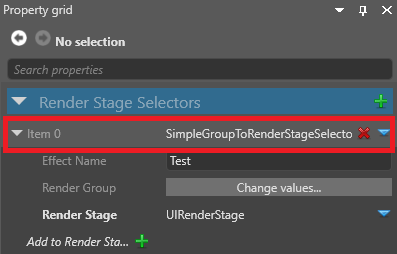
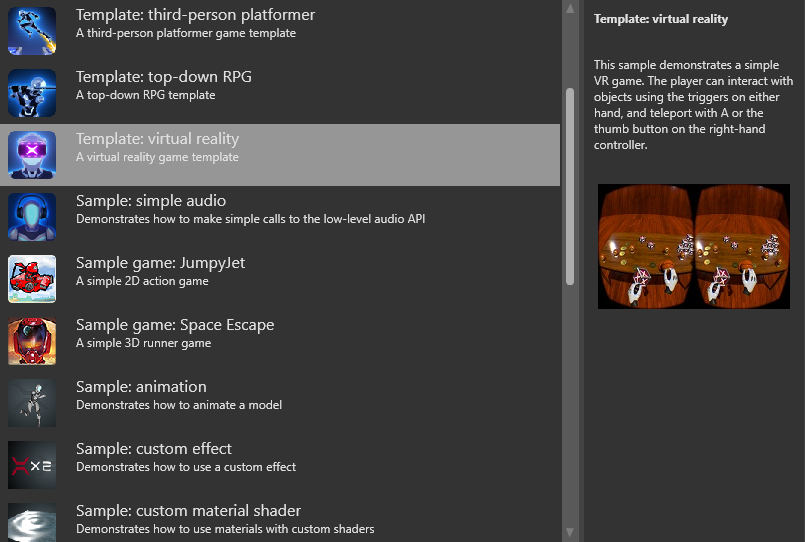

Display a UI in an overlay
This page explains how to render a UI to a texture, then display it as an overlay.
These instructions assume you already have a UI that you want to display in the overlay. For information about creating UIs, see the UI section.
Note
You can't see overlays when you don't run your game in your VR device. This is because the VR device itself creates the overlay, not other hardware.
1. Create a render target texture
In the Asset View, click Add asset and select Texture > Render target.
Game Studio adds a render target texture to your project assets.

In the following steps, we'll render the UI to this texture, then display it in the overlay.
2. Add a VR overlay
In the Asset View (in the bottom pane by default), double-click the Graphics Compositor asset.

The graphics compositor editor opens. For more information about the graphics compositor, see the Graphics compositor page.
In the graphics compositor editor, select the forward renderer node.

In the Property Grid (on the right by default), expand VR Settings.

Next to Overlays, click
 (Add).
(Add).Game Studio adds a new overlay to the list.

Next to Texture, click
 (Select an asset).
(Select an asset).The Select an asset window opens.

Select the render texture you created and click OK.
3. Set up the UI render feature
In the graphics compositor editor, on the left, under Render Features, select the UIRenderFeature.
In the Property Grid, make sure SimpleGroupToRenderStageSelector is selected.

Under Render Stage, make sure UIRenderStage is selected.
This makes sure the UI is rendered in the UI render stage, which we'll use in the next step.
4. Set up the renderers
To display an overlay, you need at least two renderers:
- one to render your main camera
- one to render the UI to the overlay
This page describes the simplest way to do this from scratch, using two cameras and two renderers. Depending on your pipeline, you might need to create a different setup.
Warning
These instructions involve deleting your existing renderers for the game entry point. You might want to make a backup of your project in case you want to restore your pipeline afterwards.
In the graphics compositor editor, select the Entry points node.

In the Property Grid on the right, next to Game renderer, click
 (Replace) and select None to delete your existing renderers.
(Replace) and select None to delete your existing renderers.
Next to Game rendererer, click
(Replace) and select Camera Renderer.
Currently, all renderers must have a camera, or be a child of a renderer that has a camera. This applies even to renderers that don't necessarily use cameras, such as the single stage renderer, which renders the UI.
For this reason, in these instructions, we'll add a game renderer with a camera, then make the two renderers children of that renderer. This makes sure both renderers have a parent with a camera.
Next to Camera, click
(Replace) and select your main game camera.
Next to Child, click
(Replace) and select SceneRendererCollection.
Next to Children, Click
(Add) and select RenderTextureSceneRenderer.
Next to Child, click
(Replace) and select SingleStageRenderer.
Next to Render Stage, click
(Replace) and select UIRenderStage. This is the renderer that renders the UI.Next to Render Texture, click
(Select an asset).The Select an asset window opens.
Select the render texture and click OK.
Game Studio adds the render texture to the renderer.
Under Game renderer, next to Children, click
(Add) and select Forward renderer.
Your game is now ready to render the UI to an overlay in your VR device.
VR template
For an example of a UI overlay implemented in a VR game, see the VR template included with Stride.
